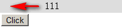
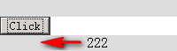
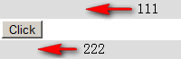

BG1003: Firefox 中 Date.now 方法被重写后 MARQUEE 元素不再滚动
标准参考
无
问题描述
Firefox 中的 MARQUEE 元素依赖于原生 JavaScript 的 Date.now() 方法。
造成的影响
若在代码中重写了原生 JavaScript 的 Date 对象，将导致 Date.now() 返回的不再是当前时间，这时在 Firefox 中 MARQUEE 元素将失去滚动效果。
受影响的浏览器
| Firefox |
|---|
问题分析
MARQUEE 不属于 W3C 规范中的元素，它最初由 IE2.0 引入，目前它已成为事实标准，所有浏览器均支持 MARQUEE 元素。
在各浏览器中查看 MARQUEE 元素的对象名称，会发现 Firefox 中与其他浏览器中有所不同：
<marquee id="m">MARQUEE</marquee>
<script>
alert(document.getElementById("m"));
</script>
| Firefox | IE8 Chrome Safari Opera |
|---|---|
| [HTMLDivElement] | [HTMLMarqueeElement] |
可以得知，MARQUEE 元素在 Firefox 中使用 DIV 元素模拟。在 Mozilla Developer Center 中关于 MARQUEE 元素叙述中特别提到：MARQUEE 元素在 Firefox 中是以 XBL 插件的形式实现的其功能。
这个插件地址为：mxr.mozilla.org/firefox/source/layout/style/xbl-marquee/xbl-marquee.xml。
通过查看代码，可以得知，MARQUEE 元素的功能实现中使用了 JavaScript 原生的 Date 对象的静态方法 'now()'。
因此，在 Firefox 中，一旦 Date.now 被改写，MARQUEE 元素的滚动也将受到影响。
Date.now() 为 ECMAScript V5 中加入的方法（第 15.9.4.4节）。
进一步测试如下：
<style>
div { width:200px; background:#DDD; }
</style>
<div id="d1"><marquee id="m1" behavior="alternate">111</marquee></div>
<button id="b">Click</button>
<div id="d2">
<script>
var a = Date.now;
Date.now = null;
document.getElementById("b").onclick = function () {
Date.now = a;
document.getElementById("d2").innerHTML = '<marquee id="m2">222</marquee>';
}
</script>
</div>
上面的代码中，页面加载时创建了一个 MARQUEE 元素 m1，然后将 “Date.now” 方法赋给变量 “a” 后将 “Date.now” 指向 null。当按下 “Click” 按钮后，恢复原始的 “Date.now”，并再次创建了一个 MARQUEE 元素 m2。
以上代码在各浏览器中效果如下：
| Firefox | IE Chrome Safari Opera |
|---|---|
 |
 |
点击 “Click” 按钮后：
| Firefox | IE Chrome Safari Opera |
|---|---|
|  |  |
可见，在将 “Date.now()” 置为 null 后，Firefox 中的 MARQUEE 元素滚动效果消失。而在 Firefox 中恢复原有的 “Date.now()” 之后创建的MARQUEE元素则又可以滚动。
再测试一下 Firefox 中 MARQUEE 元素对 Date 对象的依赖性：
<script>
var a = Date.now;
Date = null;
Date = {};
Date.now = a;
</script>
<marquee behavior="alternate">111</marquee>
代码中 Date 已经不是 JavaScript 原生的 Date 对象，但 “Date.now()” 仍被保留，此时在 Firefox 中仍然可以使 MARQUEE 元素出现滚动效果。
解决方案
MARQUEE 元素为非 W3C 标准元素，应尽量避免使用。同时应尽可能不对原生的 JavaScript 进行修改甚至删除。
参见
知识库
相关问题
测试环境
| 操作系统版本: | Windows 7 Ultimate build 7600 |
|---|---|
| 浏览器版本: |
IE6 IE7 IE8 Firefox 3.6 Chrome 4.0.302.3 dev Safari 4.0.4 Opera 10.51 |
| 测试页面: | firefox_marquee_date_now.html |
| 本文更新时间: | 2010-07-14 |
关键字
MARQUEE Date now Firefox 字幕 跑马灯